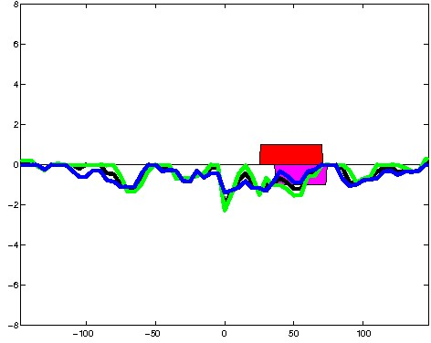
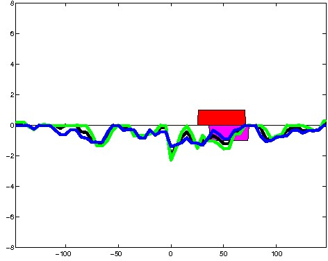
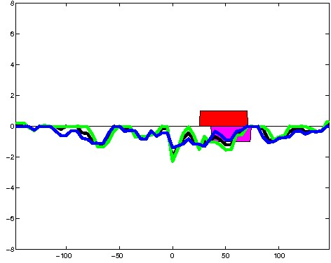

K562 Repressive DNase matched - State 12:CtcfO (n=49)
K562 Repressive DNase matched - State 12:CtcfO (n=49)
[
See group descriptions
]

; picked in K562 (state 12:CtcfO, DNase); matched; chr20:42,876,809-42,877,103 (295bp)")
; picked in K562 (state 12:CtcfO, DNase); matched; chr11:43,598,569-43,598,863 (295bp)") 

; picked in K562 (state 12:CtcfO, DNase); matched; chrX:118,646,489-118,646,783 (295bp)")
; picked in K562 (state 12:CtcfO, DNase); matched; chr1:154,518,909-154,519,203 (295bp)")
; picked in K562 (state 12:CtcfO, DNase); matched; chr9:134,731,509-134,731,803 (295bp)")
; picked in K562 (state 12:CtcfO, DNase); matched; chr2:177,319,669-177,319,963 (295bp)")
; picked in K562 (state 12:CtcfO, DNase); matched; chr10:43,251,209-43,251,503 (295bp)")
; picked in K562 (state 12:CtcfO, DNase); matched; chr9:38,087,969-38,088,263 (295bp)")
; picked in K562 (state 12:CtcfO, DNase); matched; chr3:193,499,009-193,499,303 (295bp)")
; picked in K562 (state 12:CtcfO, DNase); matched; chr5:178,266,369-178,266,663 (295bp)")
; picked in K562 (state 12:CtcfO, DNase); matched; chr1:6,403,549-6,403,843 (295bp)")
; picked in K562 (state 12:CtcfO, DNase); matched; chr11:133,004,489-133,004,783 (295bp)")
; picked in K562 (state 12:CtcfO, DNase); matched; chr15:79,299,469-79,299,763 (295bp)")
; picked in K562 (state 12:CtcfO, DNase); matched; chr6:139,430,709-139,431,003 (295bp)")
; picked in K562 (state 12:CtcfO, DNase); matched; chr12:67,087,689-67,087,983 (295bp)")
; picked in K562 (state 12:CtcfO, DNase); matched; chr4:147,163,149-147,163,443 (295bp)")
; picked in K562 (state 12:CtcfO, DNase); matched; chr1:48,191,929-48,192,223 (295bp)")